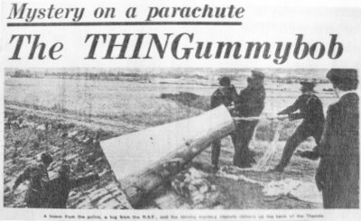

Le FBI a vent par une source confidentielle que
des agents de la NASA divulguent clandestinement, hors de l'agence, des
"informations maison" relatives aux ovnis.
À Houston, un énorme objet de 15 x 60 m est observé en sustentation à quelques m du
sol par 2 officiers de police.
Une observation identique a lieu au même moment à Houston, Texas.
La police et la RAF remontent la capsule des bancs du Thames

Des ouvriers près du tunnel de Dartford, Kent, Angleterre, près de la rivière Thames,
voient quelque chose de grand et argenté flotter dans le ciel, avec un parachute attaché. Je l'ai vu descendre en
flottant et ai pensé que c'était un vaisseau spatial, dira l'un d'eux. Ils appelent la police qui arrive
rapidement ainsi que les premiers journalistes. La "chose", qui ressemble beaucoup à une capsule spatiale - 8 pieds
de long, 4 pieds de large à sa base, s'effilant en un cou étroit. Sur sa coque une inscription : H-OR-25-2.
La police décide d'essayer de communiquer avec ses éventuels occupants. Selon la presse : Un tapa discrètement
sur la coque et demanda : "Il y a quelqu'un là-dedans ?". Il n'y eu aucune réponse... un autre donna un coup de pied
et dit "Sortez de là". Mais personne ne le fit. La presse veut des photos, mais la police les en empêche en
couvrant la chose avec leurs manteaux et monte la garde. Il pourrait être sur la liste secrète,
explique-t-elle. Une capsule spatiale de Gemini 5 ? s'aventure à spéculer un spectateur. Ca ressemble plus
à un de ces trucs météo qu'ils envoient en l'air, contre un autre. Quelqu'un se risque à faire l'hypothèse d'un
canular. En fait la police a fait une recherche dans la zone plus tôt et trouvé 2 jeunes hommes dans un arbre, en
train d'observer avec une paire de jumelles. Interrogés, ils déclarent faire simplement du repérage d'aéronefs, et
la police les laisse tranquilles. On apprendra par la suite qu'il s'agissait d'un appareil du centre de recherche en
aviation de Farnborough Keeling, John: "Invasion 1967", Fortean Times, p. 32.
A Jalapa, Mexique, un journaliste local, 2 chauffeurs de taxi et un toréador voient
planer un objet dont la circonférence est percée de fentes lumineuses et dans lequel on aperçoit un être vêtu de
noir, aux yeux brillants comme ceux d'un chat, qui tient une sorte de barre métallique qui brille. L'entité
disparaît soudainement.
Panne de courant générale à Cuernavaca.
A Chisholm, Minnesota, Bett Diamon
observe pendant 5 lumières oranges en ligne voler rapidement et faire un virage abrupt Cas Blue
Book n° 9970 non résolu.
A Rodio (Rodeo?), Nouveau Mexique, le docteur
physicien chimiste George Walton et sa femme voient 2 objets blancs et ronds voler
côte à côte, entre 30pieds et 50pieds, avancer au même rythme que les témoins durant Cas
Blue Book n° 9971 non résolu.